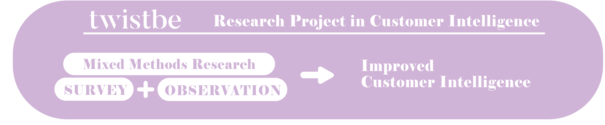

Case Company Project: Twistbe
I worked in a team developing customer intelligence research for Twistbe. The research was part of a course Research Project in Customer Intelligence (6 ects). Twistbe is a skincare retailer and salon in Helsinki. Twistbe markets itself by having knowledgeable founders and staff who are willing to help their customers choose the right product for their skintype. The focus of the research was to improve the customer intelligence of Twistbe through quantitative research, as well as secondary market data from Finland. The project was executed in close communication with the client. The team had regular meetings and messaging with Twistbe to stay on target regarding the needs and wishes of the client.
The quantitative research was conducted via a survey. The team used convenience sampling to gather answers. The surveyees were asked about their skincare purchasing habits, such as how often they buy skincare products and how much money they usually spend on them. In addition, the survey contained questions regarding the importance of different factors in skincare products, such as brand loyalty, eco-friendliness, and whether the products are natural or not. On top of that, the questionnaire surveyed how Finnish consumers see the corporate design of Twistbe and what the name Twistbe is commonly associated with.
